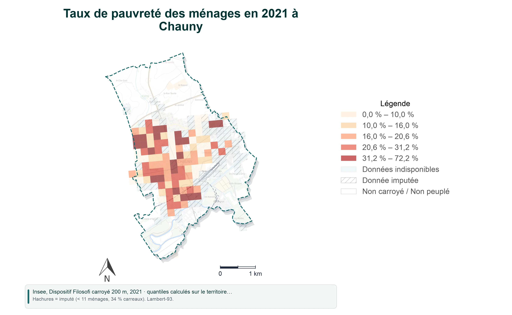

Observatoire des territoires : diagnostics et indicateurs locaux
La puissance d'un moteur d'analyse croisant plus de 150 sources officielles et plus de 700 indicateurs
pour vos communes
& intercommunalités.
Grâce à un moteur d’analyse développé sous Python, sans Intelligence Artificielle (IA) et 100 % conforme
RGPD, l'Observatoire d'InCitta consolide les données publiques officielles, calcule des indicateurs comparables
et produit des rapports complets et atlas cartographiques documentés, livrés rapidement.
Connecté à InConcertta, l'Observatoire permet également de prolonger l'étude par l'analyse croisée des
consultations citoyennes.
48hLivrables rapidementRapport complet, cartes haute résolution et synthèse
Trois prestations lisibles, adaptées à votre besoin
Des niveaux d’analyse adaptés à la décision
De la photographie d’un territoire à l’objectivation d’un enjeu public, chaque niveau d’analyse répond à un
usage précis : état des lieux, diagnostic thématique, ou base quantitative pour vos propres études.
Offre 1
Portrait territorial
Comprendre les caractéristiques et les évolutions d’un territoire.
Indicateurs démographiques, sociaux et économiques
Habitat, offre de services et équipements publics
Comparaisons avec des territoires de référence
Rapport de synthèse et tableaux de données
Sources, millésimes et limites méthodologiques
Offre 2
Diagnostic thématique
Objectiver une problématique publique précise.
Pauvreté et fragilités sociales
Habitat et vacance résidentielle
Vieillissement et offre de services
Mobilités et dépendance automobile
Environnement, foncier, quartiers prioritaires (QPV) et attractivité
Offre 3
Production quantitative
Renforcer vos diagnostics avec une base quantitative documentée.
Collecte et consolidation des données
Construction d’indicateurs et comparaisons territoriales
Tableaux, graphiques et cartographies
Fichiers exploitables et sources documentées
Complément de votre expertise qualitative — sans la remplacer
Pourquoi choisir l'observatoire InCitta ?
Un traitement automatisé en local (garantie d'étanchéité et souveraineté des
données, 0 % fuite RGPD), une actualisation immédiate des indicateurs et un rapport complet de diagnostic
territorial prêt à l'emploi livré rapidement pour vos comités et arbitrages.
Collecter & documenter
Sources institutionnelles pertinentes, millésimes et licences associés à chaque série.
Calculer & comparer
Indicateurs consolidés à plusieurs échelles : commune, EPCI, strate départementale et repères nationaux.
Repérer les écarts
Évolutions et écarts qui méritent une lecture approfondie — pas une « alerte » automatique
présentée comme vérité.
Produire les livrables
Rapports, tableaux et cartes adaptés au besoin du commanditaire.
Vérifier & contextualiser
Relecture métier avant utilisation dans les arbitrages publics ou dans un dossier d’étude.
InCitta s’appuie sur des données publiques officielles. Chaque série est associée à
son producteur, à son millésime et à ses limites d’interprétation. Les indicateurs sont calculés selon des
méthodes documentées : à données et paramètres identiques, on retrouve les mêmes résultats. Les choix
méthodologiques (périmètre, comparateurs, seuils) sont explicités pour pouvoir être discutés.
1. Sources documentées
Catalogue de plus de 150 sources officielles de données (statistiques nationales, données ministérielles,
fiscales et agences d’État),
structurées pour
le diagnostic territorial et l’aide à la décision opérationnelle.
Revenus & précarité : commune, IRIS et carroyage fin 200 m
Quartiers prioritaires (politique de la ville) et référentiels géographiques certifiés
2. Indicateurs & comparaisons
Plus de 700 indicateurs territoriaux mobilisables. Les comparaisons (EPCI, département, strate de référence,
repères nationaux) objectivent immédiatement vos forces et vulnérabilités.
Benchmarks et écarts documentés
Croisements thématiques et analyses multidimensionnelles
Indices synthétiques : variables, méthode et limites explicitées
3. Livrables exploitables
Des livrables structurés pour alimenter vos réunions et arbitrages : une base quantitative solide prête à
intégrer directement vos documents réglementaires et stratégiques (PLU/PLUi, ABS, contrat de ville ou projet
de territoire).
Rapports Word (.docx) sourcés
Cartes haute définition
Tableaux Excel d’indicateurs consolidés
Plusieurs domaines d’analyse territoriale
Les thèmes se choisissent avec vous, selon vos enjeux locaux et les données
disponibles. Chacun applique la même méthode : sources officielles, comparaisons et limites explicites.
Cohésion sociale & précarité
Revenus médians, taux de pauvreté, allocataires sociaux, monoparentalité, isolement et
analyse spatiale fine au carreau 200 m.
Des cartographies et livrables prêts pour la décision
publique
Rapports, cartes et tableaux sont conçus pour servir directement : présentés en
comité de pilotage, partagés en réunion ou intégrés à vos propres dossiers. Chaque livrable indique ses
sources, ses millésimes et ses limites, dans des formats modifiables et haute définition.

Atlas cartographique haute résolution
Taux de pauvreté : analyse fine des disparités de revenus et poches de vulnérabilité au
maillage communal et carroyé fin 200 m. (1/5)
Rapport d'analyse & synthèse décisionnelle
Titre & Cadrage institutionnel : Diagnostic Territorial Logement & Habitat pour une commune
croisant les données publiques de l'habitat, de la fiscalité et des marchés
fonciers. (1/13)
Rapport DOCX
Rapports & synthèses rédigés
Études structurées : synthèse, constats, comparaisons, limites méthodologiques et pistes de lecture. Volume
adapté à l’usage — la longueur n’est jamais présentée comme preuve de qualité.
Synthèse, constats & comparaisonsLimites méthodologiques & pistes de lectureVolume calibré à l’usage
Atlas cartographique
Cartes multi-échelles
Cartes thématiques aux maillages commune, IRIS, EPCI et carroyage fin 200 m.
Séries documentées : valeurs, comparaisons, millésimes et identifiants de source. Destinées à l’exploitation
et à l’audit — pas une simple copie des fichiers bruts des producteurs.
Valeurs, comparaisons & millésimesIdentifiants de source documentésExploitation & audit — pas du brut producteur
Dans quelles situations mobiliser l’Observatoire ?
Une base quantitative documentée pour connaitre votre territroire, alimenter vos
démarches stratégiques, objectiver vos diagnostics et préparer vos concertations citoyennes.
PLU / PLUi
Alimenter le rapport de présentation et l’état des lieux quantitatif (démographie, habitat, environnement)
avant intégration au dossier réglementaire.
Analyse des besoins sociaux (ABS)
Base chiffrée pour CCAS / CIAS : pauvreté, familles, isolement — à articuler avec la mobilisation des
acteurs et l’analyse des besoins.
Convention territoriale globale (CTG)
Indicateurs familles / petite enfance pour préparer le diagnostic territorial partagé.
Politique de la ville & NPNRU
Lecture QPV / hors-QPV, écarts socio-économiques et suivi d’indicateurs de contexte.
Petites Villes de Demain & Action cœur de ville
Vacance, marché immobilier, centralité et attractivité — pour objectiver le diagnostic de centre-bourg.
Bilan de mi-mandat & projet de territoire
Photographier les évolutions démographiques, sociales et économiques pour ajuster la feuille de route.
Rigueur, traçabilité et respect des règles de diffusion
L’Observatoire s’appuie sur les standards de la statistique publique : sources officielles, millésimes
explicites, reproductibilité des calculs. Les règles de confidentialité propres à chaque producteur (dont les
seuils légaux sur le carroyage) sont respectées sur les jeux concernés.
1. TraçabilitéChaque chiffre est rattaché à son producteur et à son millésime.
2. ConfidentialitéApplication des règles de diffusion de la statistique publique (notamment carroyage fin 200 m).
3. Échelon adaptéLecture calibrée au territoire : un bourg n’est pas analysé comme une métropole.
Cadrer votre besoin territorial
Quatre critères pour un cadrage méthodologique sur mesure — réponse personnalisée à votre adresse
professionnelle.